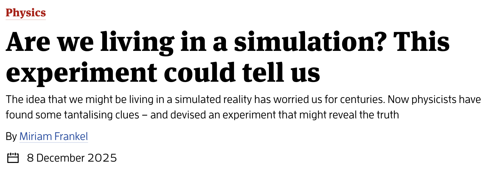
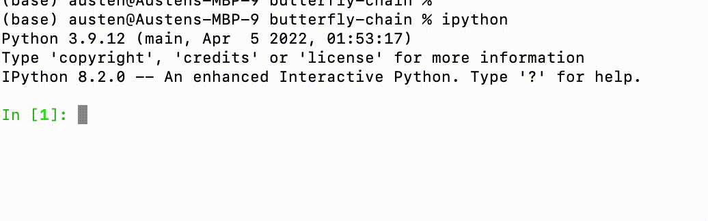

Hello world!3
Are all processes that happen in the physical universe computable in principal (perhaps on a quantum computer)?
This is the (physical) Church–Turing thesis
What computations can we do with finite resources including time and space (memory)
How hard — or complex — are the computational tasks we wish to perform? Can we quantify this?
You know many mathematical problems that arise in the course of doing physics (e.g. solving a differential equation)
In this course you will learn
Assume a knowledge of the Python language, including variables, control flow, and writing and using functions
Refer to last year’s IB course (which has an excellent handout)…
…and of course the internet
For an absolutely bare bones intro to Python try the first half of this tutorial
Eight lectures. Mondays & Wednesdays at 10.00 in the Ray Dolby Auditorium
After the lectures: four computing exercises
Exercises count for 0.2 units or further work, or roughly 2% of your final mark for the year
Each exercise should only take you a few hours.
Six lectures, followed by one week break for first exercise starting 14th February
You may choose to offer a Computational Physics project for one unit of further work
Choose a problem from the project list. Analyse the problem, write and test Python code to investigate it, then write up your work in a report
Project list will be published by 20th February
Deadline for submission of the project report is 16:00 on the first Monday of Full Easter term (4th May 2026)
Everyone finds their own workflow for coding (language, editor, etc.)
This is a roundup of some popular tools in the Python ecosystem
You will need to install the Python language (or run online)
I recommend the Anaconda distribution
Comes with all parts of the toolkit we’ll need such as Jupyter notebooks and the major libraries NumPy and SciPy
Try running python at the command line
You should get something like
Python 3.12.7 | packaged by Anaconda, Inc. | (main, Oct 4 2024, 08:28:27) [Clang 14.0.6 ] on darwin
Type "help", "copyright", "credits" or "license" for more information.
>>> python3 will also work and guarantee this if you happen to have Python 2 as the default)>>> indicates that you have started the Python interactive shell or REPL and are good to go:quit() or exit()If you the above with python nice colour scheme is absent
This is called syntax highlighting and provides a visual guide to the syntax of the language
IPython is an interactive shell that provides syntax highlighting and much more
If you have installed IPython (it comes with Anaconda) you can start it from the command line with ipython
tab to autocomplete. Particularly useful for viewing all properties or methods of an object:
?obj or obj? prints detailed information about the object obj (?? provides additional detail)Magic commands prefixed by % provide additional functionality
%timeit finds the executation time of a single line statement, which is useful when profiling the performance of code:
61.2 μs ± 3.56 μs per loop (mean ± std. dev. of 7 runs, 10,000 loops each)%timeit automatically runs several times to give statistics on execution time. For multiple lines you can use the %%timeit magic.
Much more in the IPython documentation
.py extension can be run from the command line withpython hello_world.pyor
python -m hello_world-m option tells interpreter to look for a module called hello_worldor just
A Python module is a file containing definition and statements
Breaking long code into modules is good practice for writing clear and reusable software
Users may not want to see the details of a function in order to be able to us it
hello_world.py containing the function:The function hello is accessed from the hello_world namespace
This is to avoid confusion if more than one imported module has a function of the same name
*:A collection of modules in a folder is called a package
You can import a package in the same way and access all the modules using the same . notation i.e. package.module1, package.module2, etc..
Since explicit namespaces are preferred to avoid ambiguity use shorthands for the package or module you are importing:
99% of the code you run will have been written by somebody else in the form of a library
Package installation is handled by the command line utilities pip or conda, the latter being the package manager for the Anaconda distribution
If you have NumPy and SciPy installed you won’t need to worry about this too much
Modern editors come with a huge number of tools that make writing code much easier
Syntax highlighting, code completion, parameter information and documentation popups as you type
These go under the general heading IntelliSense
Next come AI code assistants like GitHub Copilot
(Imo) these are all part of a continuum of productivity enhancements that enable people to write better code faster. Try them out!
I use Visual Studio Code
Software developers write .py files, modules and packages
Scientists and others doing more exploratory work tend to favour a Notebook format that mixes code, text, and plots
Dominant option is Jupyter notebook, which comes with the Anaconda distribution
Start from command line with jupyter notebook (or from the Anaconda Navigator application)
Opens a notebook as a web page in your browser, where it can be edited and saved. The default extension is .ipynb
Jupyter notebooks can run code in different languages, but the default process is IPython
Text cells can be formatted using Markdown and also support \(\LaTeX\) equations, which is pretty handy for us
Google has their own cloud version of the Jupyter notebook called Colab
Try it out for free, though you have to pay for significant compute
The “next generation” of the Jupyter notebook is called JupyterLab and can be started with jupyter lab
Notebook files can be opened in either JupyterLab or Jupyter Notebook